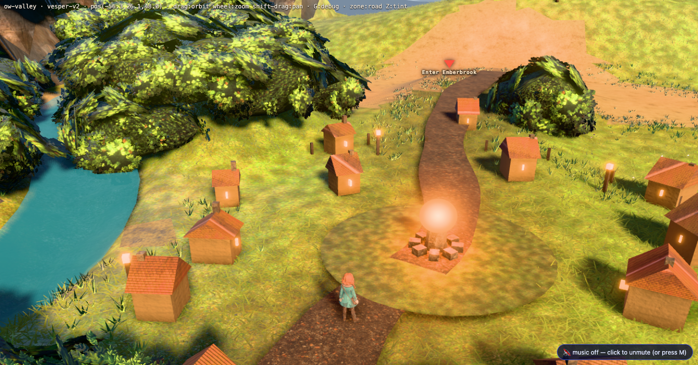
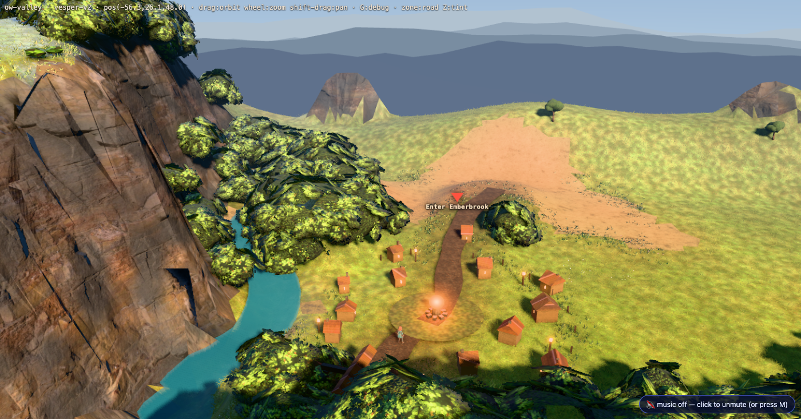
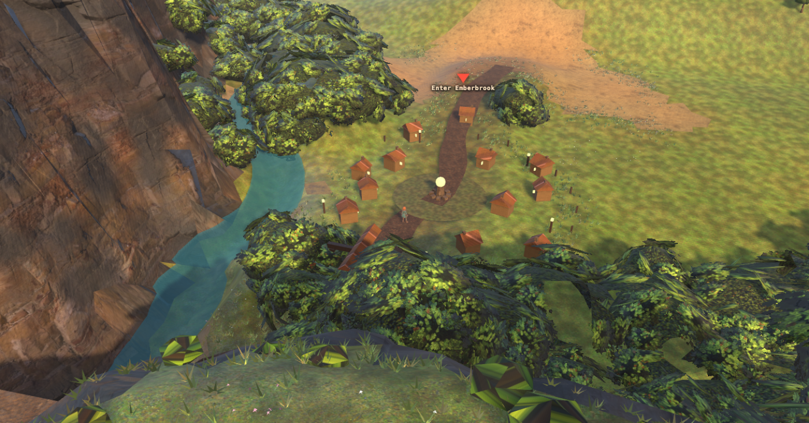
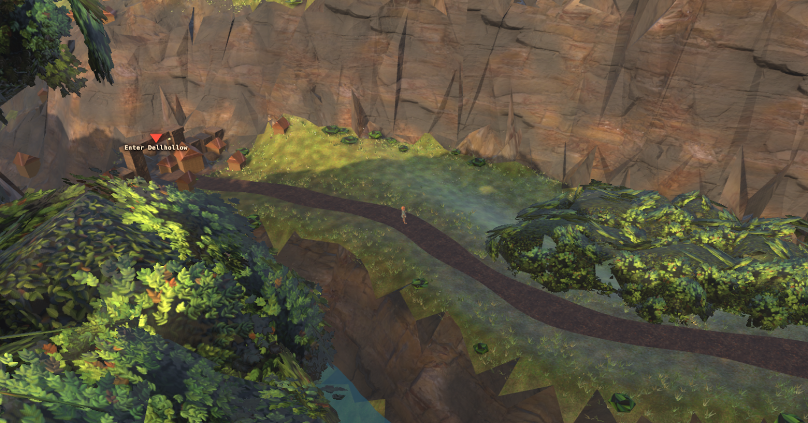
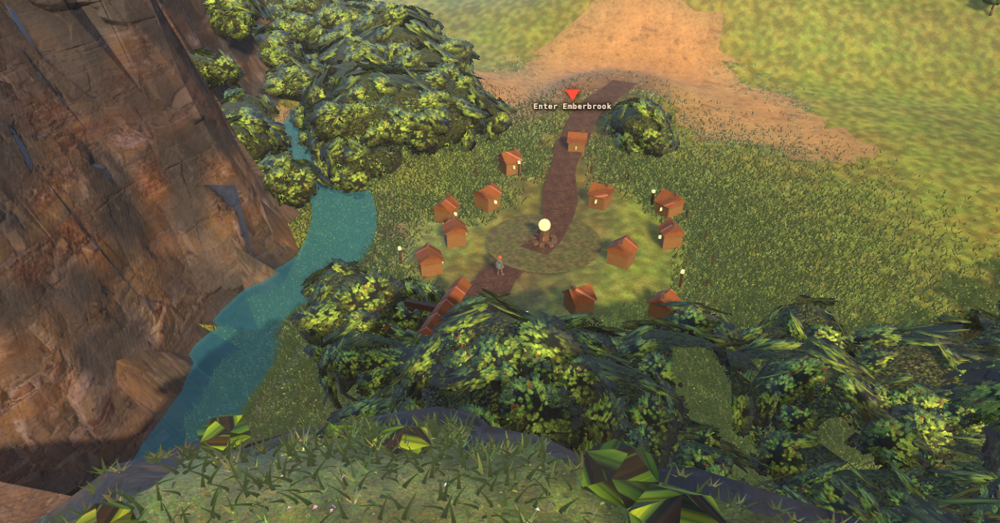
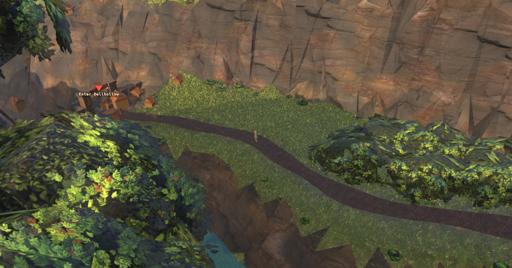
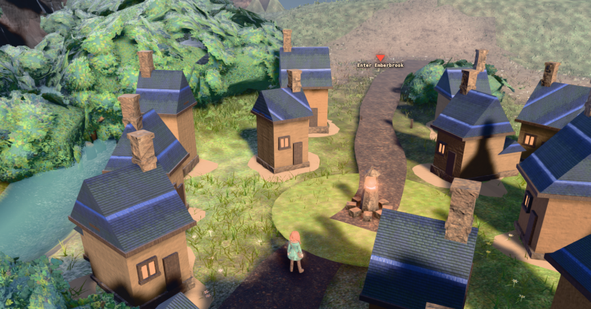
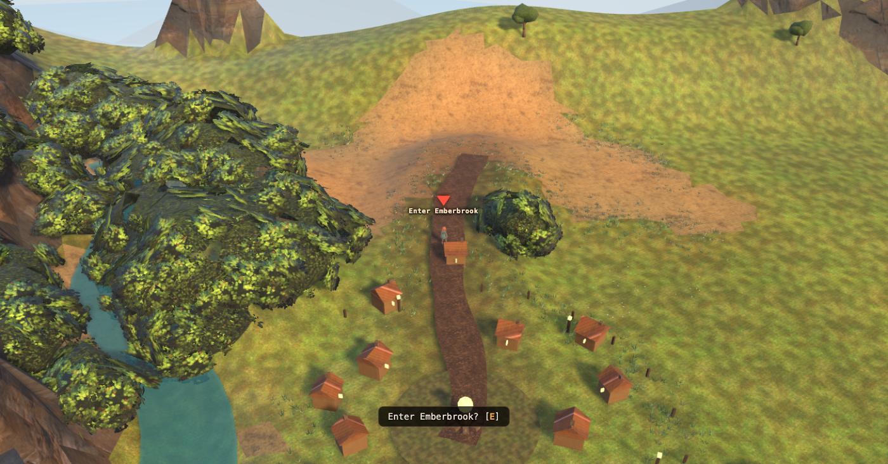

Overworld art, measured against the real references
2026-08-04 · corridor ow-valley · camera as shipped (pitch 0.61, boom 40 — user ruling, untouched)
Plates captured with --extra postfx=off unless a caption says otherwise. Instruments: tools/ow_probe/imgstat.py, tools/ow_probe/refmatch.js, tools/ow_probe/ow_multi.mjs.
docs/qa/ow-land comparison. That pass was run against
REF1–3.jpg, which are re-encodes of reimagine_ff9_2/_3/_dagger.jpg — and
_dagger is a character portrait, used there as the bar for landscape art. Its
measurements are fine; conclusions drawn from that bar are not. The real references are the three
overworld gameplay screenshots below.
R10 · The light gets a second colour, and the floating building was never floating
The critic’s whole brief in three lines: “the light has one colour instead of two; the ground is a colour instead of a surface; objects rest on the terrain instead of being bedded into it.” Plus a bug report — an upper-left building whose “stone plinth is a detached slab hanging in mid-air with a visible underside face and daylight beneath it.” It is not detached. What is there is a footing that grew as tall as the wall it carries, on a station with a 1.3u corner spread, with nothing bedding it in — and the misread is the finding.


SIM.pick at the critic’s own pixels puts the ground behind the
stone and its underside 0.4–0.6 u below the terrain, and a 4 px-step scan of all four landscape
frames finds no downward-facing first hit on any building at all. The “blob shadow with no
caster”: it survives hiding every veg_ mesh in the scene, and at __shadowTune(0)
it resolves into a chimney stack. Both were still worth the trip — the first named an over-tall unbedded
plinth, the second is a real shadow that reads as a smear because of shadow-map texel size.
R9 · The cottages were 1.1× the character. They are 2.65× now.
Four independent observers reached this by two unrelated routes: a shadow-geometry probe measured in the running page, and three blind art critics who saw neither the probe nor each other. “The character is roughly one house tall… the settlement reads as a tabletop model.”




emberbrook_road_clear_u) in
valley_build.json so it cannot regress silently again.
1 · What the three real references actually establish


Correcting the brief on two points. First, the shared cue is not sky — REF1's top third is cliff and sea, REF3's is misty mountain, and only REF2 shows real sky. What all three have is a long view: a distance plane kilometres out, rendered cool and desaturated. Second, the camera is not "8–12 m back at a shallow angle" — all three are high three-quarter booms at roughly 30–40° down with the character at 7–10% of frame height, sitting below centre with the vista stacked above. The framing is closer than ours, but it is not low.
All three stratify vertically: fine near-field material at the bottom, the playfield and character in the middle, a cool distance plane on top. That stratification is the transferable idea, and under a downward camera our own vertical axis is a depth axis too — which is what makes the band measurements below comparable.
2 · The measured gap
Band crops: FAR / NEAR = top / bottom third of frame. bmr_dark = blue-minus-red in the dark
quartile (higher = cooler). Refs cropped to exclude HUD.
| Frame | FAR bmr_dark | NEAR bmr_dark | FAR − NEAR | FAR detail | NEAR detail |
|---|---|---|---|---|---|
| REF1 clifftop | +0.191 | −0.146 | +0.337 | 45.2 | 46.7 |
| REF2 night | +0.318 | +0.154 | +0.164 | 36.0 | 49.9 |
| REF3 vale | +0.224 | −0.046 | +0.270 | 12.9 | 34.7 |
| ours — gate | −0.124 | −0.133 | +0.009 | 33.1 | 40.8 |
| ours — meadow | −0.073 | −0.016 | −0.057 | 43.5 | 43.0 |
| ours — gorge | −0.092 | −0.013 | −0.079 | 21.1 | 33.8 |
The refs hold a +0.16 to +0.34 cool-far / warm-near gradient. We hold none, and in two of three frames it runs backwards — our far field is warmer than our near field. Every one of our bands is also red-dominant in absolute terms.
3 · Cool distance is real — and fog cannot buy it
I swept fog colour and ramp against the day refs' FAR band (target bmr_dark +0.19…+0.22 at
S50 0.29…0.35) before the scope seam was drawn. Reporting it as a finding for the
post-processing lane, not as a build — depth fog is theirs.
| Fog config | meadow bmr_dark | meadow S50 | gorge bmr_dark | gorge S50 |
|---|---|---|---|---|
shipped d3e0e8 34/205 | −0.073 | 0.371 | −0.092 | 0.305 |
A 9ec4de 30/150 | −0.031 | 0.289 | −0.059 | 0.241 |
B 8fb8d8 30/130 | −0.017 | 0.256 | −0.047 | 0.213 |
C 9ec4de 40/190 | −0.065 | 0.412 | −0.091 | 0.328 |
E a8c8dc 44/210 | −0.073 | 0.449 | −0.097 | 0.342 |
Recommendation to the post lane: the cool far field wants a depth-graded hue rotation toward blue that holds saturation, not denser fog. The shipped
34/205 is already about the
best fog alone can do here — better left alone than traded for an invisible hue gain.
4 · Our frame beside the matching reference


Read the ground, not the composition. Ours is a smooth vertex-colour gradient with a few large flat star-shaped tufts and a road that is a hard-edged ribbon. Theirs is a fine blade carpet, gravel speckle in the worn dirt, and grass fingering irregularly over the path edge. Our high camera makes near-field ground the majority of the frame, so this is where we have the most to gain, and it costs no new assets.
5 · What I changed — near-field blade carpet
RM.s4(): ~110 blades/m² inside 16 m, thinning to zero at 34 m, scattered by distance
rather than by seam, with a baked base-to-tip value gradient and a fringe that spills irregularly into the
road cells of the zone raster. Instances are named veg_rm_blades.


| Frame | NEAR detail before | NEAR detail after | Δ | FAR→NEAR shape |
|---|---|---|---|---|
| gate | 41.8 | 76.1 | +82% | rises (ref shape) |
| meadow | 43.3 | 48.9 | +13% | falls — far band holds the lit town |
| gorge | 33.9 | 38.7 | +14% | rises (ref shape) |
Near-field saturation also moved toward the refs on all three (gate 0.531→0.452 vs REF1's 0.503; meadow 0.321→0.341; gorge 0.264→0.293).
6 · Things I tried that made it worse, or did nothing
land.js l2 clumps — a regression at this camera


The previous pass's clump geometry is authored for a closer camera. At boom 40 the blobs read as crumpled
rock, not foliage. Not used; s4 scatters blades only.
ow_f2_matte rendered as dead twigs. That material is authored
with vertexColors:true against the terrain's own COLOR_0; applied to blade geometry
carrying a different colour attribute, the whole field came out near-black. Fixed by giving the blades an
explicit material and their own baked gradient. The lesson generalises: a shipped material is not a
portable material — it carries an attribute contract with the geometry it was authored for.
RM.s5) measured as a complete no-op — unresolved.
An onBeforeCompile injecting world-space value noise into the ground diffuse changed
nothing: mat and base differ by <0.15 in every band on every frame
(gate FAR detail 35.06 vs 35.11). First attempt used 3.1/11.0 cycles per metre, which is sub-pixel at 35 m and
correctly averaged to flat; but coarsening to 0.9/3.2 cycles/m and raising the amount to 0.34 changed the
numbers just as little. Most likely cause: three.js caches the compiled program by cache key, and
needsUpdate alone does not rebuild a shader whose customProgramCacheKey is
unchanged — so the patched source was probably never compiled. Flagged rather than claimed: pixel-scale
ground material is still, by eye, the loudest remaining gap, and vertex colour cannot supply it (the terrain's
vertices are metres apart, so several metres is the finest thing it can represent).
WRONG, corrected 2026-08-04 — and the correction is the lesson. The shader was live the whole time.
Material.customProgramCacheKey() returns onBeforeCompile.toString(),
so assigning a new closure does change the key and does force a rebuild. Proved by pushing
diffuseColor.rgb = vec3(1,0,1) through the identical path: the terrain went flat magenta on the
next frame and the callback fired 3/3 (ground_valley_1/2/3, so the name selector was fine too).
The defect was in the instrument: mean |laplacian| over a 1 px kernel is nearly blind to a
±17 % multiply whose features are 10–30 px across at this camera. A straight pixel diff of the same
two plates shows 15 % of pixels moving by more than 2/255, peak 59/255 — visible to
anything that looked. A metric that cannot resolve the effect will report the mechanism broken, and the
next lane will go and fix the mechanism. The real fix was frequency and amount, not plumbing: see §9.
7 · Scope and safety
- Camera untouched. Every plate is the shipped pitch 0.61 / boom 40. No camera proposal was produced.
- No pipeline work. No fog, AO, bloom or grading shipped from this lane; the fog sweep is handed over as a finding.
- Pipeline state recorded beside every measurement. Section 2's table and the section-6 clump plates predate the seam and were shot with the composer on; sections 5 and 6's material note are
postfx=off.ow_multi.mjsgained--extraso this can never again go unrecorded. - No new assets. Blade geometry and gradient are generated procedurally at runtime.
- Nothing entered the walk set. These are runtime probes —
public/assets/scenes/ow-valley/scene.glbis byte-untouched, so the shipped walk network cannot have changed. Instances areveg_-prefixed so theplay3d.html:1282exclusion holds if this is ever baked into the bundle.
8 · What I would do next, in cost order
- Fix and land the ground detail material (
customProgramCacheKey) — by eye this is the biggest remaining content gap, and gravel speckle in the worn dirt is most of what separates our path from theirs. - Lift blade albedo so density stops darkening the near field, then raise density further toward the refs' carpet.
- Path-edge irregularity as authored content — the spill fringe helps, but the ribbon's own boundary in the zone raster is still geometrically clean.
- Replace the canopy blobs with ground-level clustered foliage; the refs' bushes sit on the ground with internal light variation.
- Hand the cool-distance problem to post as a depth-graded hue rotation, then re-measure the FAR−NEAR gradient to see what content bought on top of pipeline.
9 · Gauntlet round 1, CONTENT lane — what shipped
The blind critic ranked us third of three and named two content deficits: "one house asset, ~14 copies, one scale, one rotation family, one material, roughly even spacing", and "near-field has scattered blade quads; a short distance in, the meadow becomes flat painted green … their ground never changes species mid-frame." Both are now in the shipped game, not in a probe.
Where each half lives
- The houses are BUNDLE content —
tools/valley_build.py, rebuilt and re-exported. Per-house uniform scale (0.86–1.16, so width, depth, wall height and ridge move together), angular jitter plus double the radial spread on the ring, a rotation that only mostly faces the green (every fourth house stands gable-on), and three wall/roof tint families carried on a face layer and multiplied intoCOLOR_0afterapply_class_gains. Zero new materials, zero new art, +56 triangles. Dellhollow got the same treatment minus the rotation scatter — a terraced town aligns to its bench.
Why the existing per-face jitter was not enough:write_prop_colorsalready jitters COLOR_0 per FACE, which is grain. What reads as "several houses" is a whole building sharing one deviation while its neighbour shares another. - The blade carpet is RUNTIME —
public/js/ow_detail.js, ow-* scenes only. It has to be: the player walks all 280×200u, so "dense where the player is" as static geometry is dense everywhere, which at 46 blades/m² is millions of triangles in the bundle. Against the live camera it costs no bytes and the falloff can have the refs' shape. 169k instances at the gate (≈1.0 M tris, one draw call), rebuilt in 58–88 ms every 9 m walked.
Two things that were measured, not guessed
baseColorTexture * COLOR_0 (glTF can only multiply) and L3 deliberately pushed grass COLOR_0 to
L 0.651 knowing a darker map would come back down over it. Sampling COLOR_0 alone made the first
carpet 1.5–2× brighter than the ground it stood in — at boom 40 that resolved as white frost across the whole
meadow. Folding in the map's measured mean fixed it in one change.
Before / after — all six plates postfx=off



The numbers, postfx=off on both sides
| frame | detail before | after | Δ | L50 before | after | S50 before | after |
|---|---|---|---|---|---|---|---|
| gate FAR | 35.9 | 95.3 | +165 % | 0.577 | 0.516 | 0.489 | 0.452 |
| gate MID | 56.1 | 95.2 | +70 % | 0.467 | 0.377 | 0.511 | 0.464 |
| gate NEAR | 41.6 | 85.5 | +105 % | 0.456 | 0.380 | 0.530 | 0.471 |
| meadow FAR | 44.9 | 76.7 | +71 % | 0.488 | 0.419 | 0.434 | 0.409 |
| meadow MID | 36.2 | 73.6 | +103 % | 0.389 | 0.339 | 0.426 | 0.408 |
| meadow NEAR | 42.7 | 50.1 | +17 % | 0.304 | 0.271 | 0.324 | 0.349 |
| gorge FAR | 21.5 | 22.9 | +7 % | 0.376 | 0.376 | 0.330 | 0.330 |
| gorge MID | 43.8 | 59.4 | +36 % | 0.315 | 0.298 | 0.299 | 0.323 |
| gorge NEAR | 34.6 | 41.6 | +20 % | 0.255 | 0.240 | 0.264 | 0.288 |
- Every band is darker. Worst is gate MID/NEAR, L50 0.467→0.377 and 0.456→0.380, against REF1's near-field 0.558. Measured, and it is not albedo: gate NEAR L50 runs 0.375 / 0.380 / 0.385 at blade lift 1.40 / 1.70 / 2.00. The carpet darkens a frame by coverage. Chasing that L back is density or exposure, and exposure is the pipeline lane's — flagged to them rather than fought here.
- Detail has overshot the references (gate 85–95 against REF1's 45–47, REF3's 13–35). Per §2's own warning this metric cannot tell blades from noise, so read the plates and not the column; but it is a real risk that a boom-40 carpet reads as busy, and it is the first thing a round-2 critic should be allowed to say without us arguing back with a number.
- Dellhollow gained a house, 11 → 12: the per-station scale and yaw wobble changed which terrace stations can bed within the 2.4u corner-span rule. Intended mechanism, unintended count.
- A rebuild is a hitch. 58–105 ms every 9 m walked (floored at one per 700 ms so a teleporting harness cannot pay it on every jump), on the main thread. Fine for a prototype, wrong for a shipping game; the fix is to spread placement across frames.
- The carpet is off under software WebGL.
cdp.mjsandtransition_testlaunch Chrome with--use-angle=swiftshader --disable-gpu, and a 1.0 M-triangle instanced field is rasterised by the CPU there. The detection is measured — booted under those exact flags,OWD.state()returns{software:true, blades:0}— but the saving was not isolated, so no speedup is claimed. It is a precaution: nothing judges art in a SwiftShader frame, and a content change that makes the suite unrunnable gets reverted.
Scope and safety
- Camera untouched; every plate is the shipped pitch 0.61 / boom 40, at the exact
base-*viewpoints (gate −57.43/65.55 yaw −1.5426, meadow −56.33/47.95 yaw −1.8040, gorge 26.45/−22.61 yaw −2.6882, all boom 40) — which were nowhere on disk and had to be recovered from a scratch file. They are written down here now, which is the same debtland_cams.jsonwas created to pay. - No pipeline work. No fog, AO, bloom, grading or tone curve.
r2pf-*.pngare the same three frames at the working-tree composer state, for the gallery only; every number above ispostfx=offon both sides. - Nothing entered the walk set.
walk_engine_gate --scene ow-valleyis GREEN — 2065 cells / 418.2 m² standable in the file, 2065 / 418.2 m² in the engine, 0 lost, BVH fail 0. The carpet isscene.add()ed only and namedveg_owd_blades. - The bundle rebuild is reproducible. Before touching anything,
valley_build+valley_exportwere re-run on the unchanged source and the GLB came back byte-identical (sha256ae6ed412…), so every difference after that is attributable to the edit.